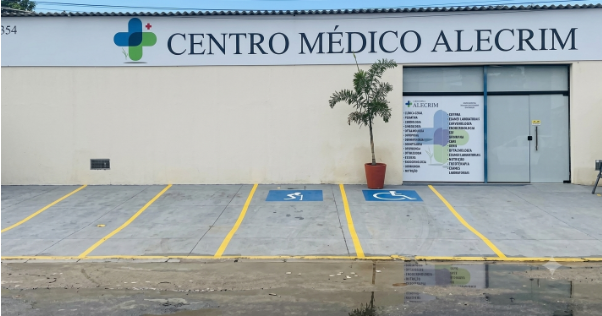

🫂
Humanização
Cada pessoa que nos procura é acolhida com respeito, empatia e atenção genuína ao seu bem-estar.
Somos uma clínica multiespecialidades comprometida com saúde acessível, humanizada e de qualidade para toda a família.

O Centro Médico Alecrim nasceu com um propósito claro: oferecer saúde de qualidade a preços acessíveis para a população de São Cristóvão e região. Acreditamos que cuidar bem das pessoas é um direito, não um privilégio.
Com 1 ano de atuação, construímos uma equipe multidisciplinar comprometida com o bem-estar dos nossos pacientes, sempre priorizando o acolhimento, a ética e a excelência técnica.
Cada pessoa que nos procura é acolhida com respeito, empatia e atenção genuína ao seu bem-estar.
Agimos com transparência, honestidade e responsabilidade em todas as nossas relações com pacientes e parceiros.
Buscamos constantemente a melhoria dos nossos serviços e da qualificação da nossa equipe de saúde.
Acreditamos que saúde de qualidade deve ser acessível a todos, independente da condição financeira.
Cumprimos o que prometemos: atendimento de qualidade, pontualidade e dedicação total à sua saúde.
Cuidamos de toda a família: crianças, adultos e idosos, com especialidades pensadas para cada fase da vida.
Agende sua consulta e experimente o cuidado humanizado do Centro Médico Alecrim.